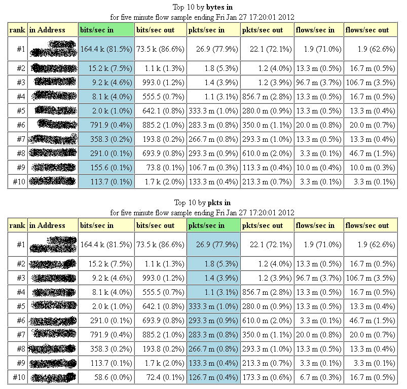
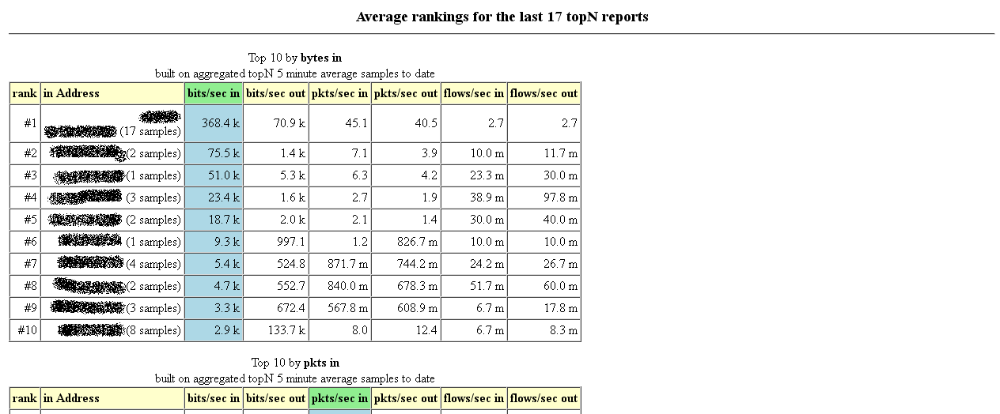
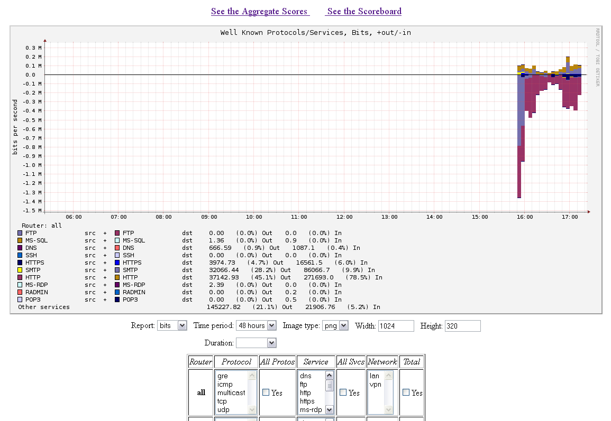

В прошлом уже приходилось пользоваться всей этой честной компанией, а сейчас выдался случай вспомнить.
Что всё это такое?
fprobe - это сенсор NetFlow, который собирает статистику по пакетам, проходящим через определённый интерфейс или все интерфейсы сразу. После заполнения буфера сенсор отправляет накопленную информацию коллектору NetFlow в виде UDP-пакета.
flow-capture - это коллектор NetFlow из пакета flow-tools, который ловит UDP-пакеты, агрегирует информацию из них и периодически складывает информацию в файл. В пакете flow-tools есть ещё масса полезных инструментов, с помощью которых можно разнообразным образом обрабатывать собранную информацию.
flowscan - Perl-скрипт, который работает в связке с одним или несколькими из трёх модулей отчётов: CUFlow, CampusIP, SubNetIO. Мы будем использовать модуль отчёта CUFlow, который находится в пакете flowscan-cuflow. Совместно они извлекают информацию из файлов с сохранёнными NetFlow-потоками и делают две вещи: аккумулируют статистику по трафику в файлы в формате RRD, а также создают HTML-файлы со статистикой самых активных узлов за последние 5 минут и за весь период наблюдения. Созданные RRD- и HTML-файлы складываются в указанные каталоги.
CUGrapher - CGI Perl-скрипт из пакета flowscan-cugrapher, который строит графики по RRD-файлам, созданным flowscan/CUFlow.
Итак, приступим к настройке. Для начала, установим необходимые пакеты:
# apt-get install fprobe flow-tools flowscan flowscan-cuflow flowscan-cugrapher
Настроим сенсор fprobe. Для этого в файле /etc/default/fprobe пропишем строки:
INTERFACE="any" FLOW_COLLECTOR="localhost:9001" OTHER_ARGS="-fip"
Строчка INTERFACE указывает, что следует перехватывать трафик на всех доступных интерфейсах.
FLOW_COLLECTOR указывает IP-адрес и порт, на котором коллектор будет принимать UDP-пакеты.
OTHER_ARGS указывает прочие опции. В данном случае указан фильтр, отбирающий только IP-пакеты (ARP-пакеты учитываться не будут).
Теперь нужно настроить коллектор flow-capture. Для этого в файл /etc/flow-tools/flow-capture.conf пропишем следующую строку:
-w /var/flow/ufa -n 287 -N 0 0/127.0.0.1/9001
В этом файле каждая строчка настраивает отдельный коллектор, так что если потребуется настроить два или три коллектора - достаточно просто добавить дополнительные строчки.
Опция -w указывает, куда будут складываться файлы.
Опция -n задаёт количество ротаций в день (287 соответствует 288 файлам в день или одному файлу в 5 минут).
Опция -N задаёт структуру каталогов для хранения файлов (0 соответствует настройке без использования вложенных каталогов - все файлы складываются прямо в указанный каталог).
Последняя опция указывает, что NetFlow пакеты будут приниматься с любого адреса на адрес 127.0.0.1 на UDP-порт 9001.
Создадим каталог для файлов:
# mkdir /var/flow
Теперь можно запустить коллектор:
# /etc/init.d/flow-capture start
С настройкой коллектора покончили, теперь будем настраивать flowscan. Для этого отредактируем файл /etc/flowscan/flowscan.cf таким образом, чтобы он принял следующий вид:
FlowFileGlob /var/flow/ufa/ft-* ReportClasses CUFlow WaitSeconds 300 Verbose 1
Настройка FlowFileGlob задаёт шаблон для файлов, которые необходимо обрабатывать.
В настройке ReportClasses через запятую указываются используемые модули отчётов.
Настройка WaitSeconds задаёт интервал времени в секундах, через который указанный шаблон будет проверяться на соответствие файлам.
Настройка Verbose задаёт выдачу диагностических сообщений (для начала рекомендую оставить её включенной).
Стоит отметить, что по умолчанию flowscan удаляет обработанные файлы. Если они вам нужны, создайте в каталоге с файлами подкаталог saved, тогда flowscan будет перемещать обработанные файлы в него. Так как я собираюсь использовать эти файлы для самых разных целей, я создаю этот каталог:
# mkdir /var/flow/ufa/saved
Теперь нужно настроить модуль отчёта CUFlow. Его настройки находятся в файле /etc/flowscan/CUFlow.cf и у меня они приняли следующий вид:
Subnet 192.168.80.0/24 Subnet 192.168.81.0/24 Subnet 92.50.0.1/32 Network 192.168.80.0/24 lan Network 192.168.81.0/24 vpn OutputDir /var/cuflow Multicast Scoreboard 10 /var/www/cuflow/ /var/www/cuflow/topten.html AggregateScore 10 /var/cuflow/agg.dat /var/www/cuflow/overall.html Router 127.0.0.1 ufa Service 20-21/tcp ftp Service 22/tcp ssh Service 25/tcp smtp Service 53/udp,53/tcp dns Service 80/tcp,81/tcp http Service 110/tcp pop3 Service 443/tcp https Service 1433/udp,1433/tcp ms-sql Service 3389/tcp ms-rdp Service 4899/udp,4899/tcp radmin Protocol 1 icmp Protocol 6 tcp Protocol 17 udp Protocol 47 gre #TOS 0 normal #TOS 1-255 other #ASNumber 1 Genuity
Настройка Subnet указывает сети, которые считаются локальными. Эти сети используются для определения типа трафика: входящий или исходящий.
В настройках Network указываются сети, для которых будут создаваться отдельные RRD-файлы.
Настройка OutputDir задаёт каталог, в который будут складываться RRD-файлы.
Если необходимо учитывать мультикаст-трафик, укажите опцию Multicast.
Настройка Scoreboard задаёт количество адресов в хит-параде интенсивности трафика за последние 5 минут, каталог, где будут храниться отчёты за произвольные 5 минут и файл, в котором будет храниться отчёт за последнюю пятиминутку.
Аналогично, настройка AggregateScore задаёт количество адресов в хит-параде интенсивности трафика за всю историю наблюдений, dat-файл, где будут храниться суммированные данные и HTML-файл с хитпарадом за всю историю наблюдений.
В настройке Router можно указать один или несколько IP-адресов (через запятую), соответствующих адресам, с которых сенсоры NetFlow отправляют информацию. Информация с этих сенсоров будет собираться в отдельный RRD-файл.
В настройке Service задаются номера портов протоколов UDP и TCP, которые будут учитываться в отдельном RRD-файле.
Настройка Protocol имеет аналогичный смысл, но распространяется уже на протоколы.
Настройка TOS позволяет вести учёт пакетов по классам обслуживания в отдельном RRD-файле. Такая информация мне не интересна, поэтому соответствующие строчки я закоментировал.
Настройка ASNumber позволяет вести статистику по трафику номерам автономных систем в сетях с маршрутизацией BGP (Интернет). У каждого провайдера есть по крайней мере один номер автономной системы, так что можно учитывать статистику по трафику по направлению от и к определённым провайдерам. fprobe не предоставляет такую информацию, да она и не интересна мне, поэтому эту опцию я тоже закоментировал.
Теперь нужно создать каталоги для хранения RRD-файлов и HTML-отчётов:
# mkdir /var/cuflow /var/www/cuflow
Каталоги готовы, можно делать тестовый запуск flowscan:
# flowscan
flowscan должен начать обрабатывать доступные файлы из каталога /var/flow/ufa. По завершении обработки он уснёт на указанные нами в настройках 300 секунд, после чего его можно прервать нажатием Ctrl-C. В каталоге /var/cuflow должны появиться RRD-файлы, а в каталоге /var/www/cuflow - файлы topten.html и overall.html, а также каталоги с файлами подобными topten.html за предыдущие пятиминутки наблюдений.
Если у вас настроен веб-сервер, вы можете зайти на него при помощи браузера и посмотреть HTML-файлы.
 Если flowscan во время обработки файлов будет выдавать предупреждения вроде этого:
Use of uninitialized value in numeric gt (>) at /usr/share/perl5/HTML/Table.pm line 2685.
Не беспокойтесь, программа работает штатно.
Осталось настроить CUGrapher. Его настройки хранятся в файле /etc/flowscan/CUGrapher.cf и у меня они выглядят следующим образом:
OutputDir /var/cuflow Organization My Insurance Company Width 1024 Height 320 DefaultGraph report=bits&hours=12&imageType=png&width=1024&height=320&duration=&router=all&all_all_services=1&router=ufa&title=Well+Known+Protocols%2FServices&legend=1 AggregateScore /var/www/cuflow/overall.html Scoreboard /var/www/cuflow/topten.html
Можно зайти браузером по адресу /cgi-bin/CUGrapher.pl и смотреть графики.
Кое-какие предупреждения и пояснения.
Статья написана по мотивам статьи Игоря Чубина NetFlow. Некоторые моменты переосмыслены. Переосмысление в основном заключается в том, что в Debian теперь все пакеты из комплекта flowscan/CUFlow/CUGrapher обновлены до их последних версий, поэтому скачивать и обновлять ничего не нужно. Также переосмыслен способ настройки CUGrapher, у которого для настройки есть собственный конфигурационный файл.